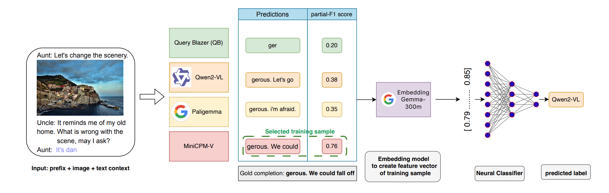

Mar 2026
Router-Suggest: Dynamic Routing for Multimodal Auto-Completion in Visually-Grounded Dialogs
EACL 2026 · Industry Track
Defined the Multimodal Auto-Completion (MAC) vision-language task from scratch — task definition, dataset curation, and evaluation protocol. Benchmarked state-of-the-art VLMs (Qwen2-VL, MiniCPM-V, PaliGemma) and proposed Router-Suggest, a dynamic routing framework achieving 2.3×–10× speedup over the best VLM baseline while maintaining near-parity accuracy.